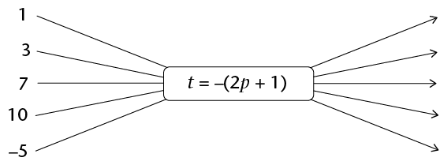

Revision and assessment
Revision
Remember to show all the steps in your working.
Whole numbers
-
Write all the numbers from the cloud in the table below, and place a tick in all the column(s) of the type of numbers they are. The first number has been completed for you:

Number value
Number system
Real numbers
Natural numbers
Integers
Rational numbers
Irrational numbers
-3
✔
✔
✔
-
The Ndlovu family is travelling to the Kruger National Park on holiday. Here is a summary of their journey:
Time
Odometer reading (km)
Description
06:12
123 564
Leave home
08:32
123 785
Stop for breakfast and petrol
09:18
123 785
Leave petrol station
11:34
124 011
Stop for toilet break
11:51
124 011
Leave petrol station
13:32
124 175
Reach Kruger gate
-
Calculate the length of time the journey took, in hours. Give your answer as mixed number.
-
Calculate the average speed of the journey, correct to one decimal place.
-
-
A car travelling at an average speed of 110 km/h takes \(2 \frac{1}{4}\) hours to complete a journey. If the return journey needs to be completed in 2 hours, calculate the average speed that must be maintained.
-
If four tins of bully beef cost R75,80, how much money would seven similar tins cost?
-
A farmer has enough chicken feed to feed 300 hens for 20 days. If he buys 100 more hens, how long would the same amount of chicken feed last before it runs out?
-
How long will it take R5 000 invested at 7,2% simple interest p.a. to grow to R5 900?
-
Chardonnay wishes to buy a new TV set costing R7 499. She does not have enough money and so needs to buy it on hire purchase. The store requires a 10% deposit and then equal monthly payments of R\(x\) for 2 years. If the simple interest charged on the account is 15%, calculate the value of \(x\).
-
How much interest will Tebogo get on R12 500 deposited for 21 months in a bank account that provides 5,3% compound interest per annum?
Integers
All the questions in this section should be answered without using a calculator.
-
Write a number in each box to make the calculations correct:
-
\(☐ + ☐ = -34\)
-
\(☐ + ☐ = -34\)
-
-
These questions show sequences of numbers. Fill the correct values in the boxes:
-
18; 10; 2; ☐
-
2; -10; 50; ☐
-
-6 386; -6 392; -6 398; ☐
-
-
This question shows a number line in which the missing number is halfway between the other two numbers. Fill the correct value into the box:

-
Calculate the following:
-
\(28 - (-15)\)
-
\((-5)(12)(-7)\)
-
\(5 + 5 \times -6\)
-
\(\frac{(\sqrt{81})(-2)^{3}}{-(-3)^{2}}\)
-
\(\frac{(-3)^{2} \sqrt[3]{216}}{(-9)(-3)}\)
-
-
Augustus ruled the Roman Empire from 27 BC to AD 14. For how many years did he rule?
Fractions
All the questions in this section should be answered without using a calculator.
-
Simplify the following:
-
\(\sqrt{\frac{36}{81} x^8}\)
- \(\frac{5}{2}x^{2} - \frac{5}{4}x^{2}\)
- \((\frac{3}{4}xy^{3})( \frac{4}{9}y)\)
-
Simplify the following:
- \(\frac{4 x^{10}}{8x^5}\)
- \(\frac{5}{x} - \frac{1}{x}\)
- \(\frac{5x}{6y^2}\times\frac{3y}{15x}\)
- \(\frac{x+2}{4z^2}\div\frac{4(x+2)}{2z^3}\)
- \(\frac{4 x^{10}}{8x^5}\)
The decimal notation for fractions
All the questions in this section should be answered without using a calculator.
- Calculate the following:
- 27,49 - 6,99
- \(0,03 \times 1,4\)
- \(1,44 \div 0,012\)
- 27,49 - 6,99
- Simplify the following:
- \(\sqrt{0.04 x^{16}}\)
- \(3.5x^{2} - 4,6 x^{2}\)
- \((1,2 x^{2}y^{3})(5y x^{2})\)
- \(\sqrt{0.04 x^{16}}\)
- Simplify
the following:
- \(\frac{0.2 x^{15}}{0.01x^5}\)
- \(\frac{0.45}{x} - \frac{1.35}{x}\)
- \(\frac{0,5 x^{3}}{4.5y^2} \times \frac{3y}{2,5x}\)
- \(\frac{2,5 x^{3}}{2y^2} \div \frac{0,5x}{0,03y^6}\)
- \(\frac{0.2 x^{15}}{0.01x^5}\)
Exponents
All the questions in this section should be answered without using a calculator, unless otherwise specified in the question.
- Write the following numbers in
scientific notation:
- 2 500 001
- 0,000 304 5
- 2 500 001
- Write the following number in
"normal" notation: \(9,45 \times 10^{-5}\).
- Which of the following numbers
is bigger: \(4,7 \times 10^{-9}\) or \(5,12 \times 10^{-10}\)?
- Calculate the following,
giving your answer in scientific notation:
- \((5,9 \times 10^{6} ) - (4,7
\times 10^{6})\)
- \((5,9 \times 10^{6} ) +
(4,7 \times 10^{5})\)
- \((7,2 \times 10^{-4} ) \times (2 \times
10^{2})\)
- \((5,9 \times 10^{6} ) - (4,7
\times 10^{6})\)
- Calculate the
following, giving your answer as an ordinary decimal number. A
calculator may be used:
- \((6,3 \times 10^{-4} ) - (1,9 \times
10^{-3})\)
- \((5,8 \times 10^{-7} ) \div (8 \times 10^{-11})\)
- \((6,3 \times 10^{-4} ) - (1,9 \times
10^{-3})\)
- Simplify the following,
leaving all answers with positive exponents:
- \(3^{-2}\)
- \(2^{7} \times 6^{-3} \times 3^{2}\)
- \(\frac{2y^{-3}}{y^3}\)
- \((2x^{6}) ^{-3}\)
- \((2x^{7}) (2,5x^{-8})\)
- \((-3a^{2}bc)^2 ( -5ac^{-2})\)
- \(\frac{(2d^2e)^2}{(4d^{-3}e^2)^{-1}}\)
- \(3^{-2}\)
- Solve the following
equations:
- \(3 \times 3^{x} = 81\)
- \(2^{x+1} = 0,125\)
- \(4^{x} +10 = 74\)
- \(3 \times 3^{x} = 81\)
Patterns
- Create a sequence that fits this description: the first term is negative, and each successive term is obtained by squaring the previous term and then subtracting 10.
Write down the first four terms of your created sequence.
- For each of the
following sequences, (i) write in words the rule that describes
the relationship between the terms in the sequence, and (ii)
use the rule to extend the sequence by three more terms:
- -5; -2; 10; -20;...
- -4,5; -6,25; -8;...
- -5; -2; 10; -20;...
- In this question you
are given the rule by which each term of the sequence can be
found. In all cases, n is the position of the term.
Determine the first three terms of each of the sequences:
- \(3 - 5n\)
- \(2n ^{2} - 3n + 1\)
- \(3 - 5n\)
-
- Write down the rule by which each
term of the sequence can be found (in a similar format to those
given in question 3, where n is the position of the term):
-15; -12; -9; ...
- Use this rule to find the value of the
150th term of the sequence.
- Write down the rule by which each
term of the sequence can be found (in a similar format to those
given in question 3, where n is the position of the term):
-15; -12; -9; ...
- Determine the pattern and then write the missing values in the table below:
Position in sequence
1
2
3
4
5
10
Value of the term
2
5
10
17
226
- The
picture below shows a pattern created by matchsticks.

- Draw your own series of matchstick patterns in which there is a common difference between each pattern. It must be different to all the matchstick patterns shown in Chapter 6 and this chapter, and should contain the first three matchstick patterns in the series.
- Write in words the rule that describes
the number of matchsticks needed for each new pattern.
- Use the rule to determine the missing
values in the table below, and fill them in:
Number of the pattern
4
5
6
7
50
Number of matches needed
Functions and relationships
-
- Use the given formula to calculate
the values of t,
given the values of p:

- Use the given formula to calculate the
missing input values, p, and output values,
t.

- Use the given formula to calculate
the values of t,
given the values of p:
- Consider the values in the
table below:
\(x\)
-2
-1
0
1
4
12
\(y\)
-4
-1
2
5
65
- Write, as an algebraic formula, the rule
for finding the y-values in the table. The
formula is in the form \(y = ax + b\), where \(a\) and \(b\) are integers.
- Use the rule to determine the missing
values in the table, and fill them in.
- Write, as an algebraic formula, the rule
for finding the y-values in the table. The
formula is in the form \(y = ax + b\), where \(a\) and \(b\) are integers.
- Consider the graph shown
below:

- Complete the following table by reading
off the coordinates of points on the graph:
\(x\)
-3
-2
-1
0
1
2
\(y\)
- Write down an algebraic formula for the
graph, in the form \(y = \)...
- Complete the flow diagram below to
represent the relationship shown on the graph:

- Complete the following table by reading
off the coordinates of points on the graph:
Algebraic expressions
- Simplify
as far as possible:
- \( (2x^{2} - 4x^{2}) ^{3}\)
- -\( 2x^{2} (5x^{3} - 3x^{2} + 2x - 5)\)
- \( (4b^{2} - 7b^{2} (5b^{-2} + 3b^{-1} - 7)\)
- \(\frac{18x^2 - 12x + 2}{6x}\)
- \((2x+5)(3x-1)\)
- \((4a - 3)^{2}\)
- \(\frac{6x^3 -2(3x)(4x) + x}{4x^2}\)
- \( (2x^{2} - 4x^{2}) ^{3}\)
- Simplify as far as
possible:
- \(4(a-2b) - 5(3b + a)\)
- \(5 +2(x^2 +5x +3)\)
- \(3x(2x^2 -3x + 4) - 3(5 - 2x)\)
- \((a + 3b - 2c) - (4a + b - c) - (2b - c +3a)\)
- \(4(3x^2 + x - 4) - (x + 3)^{2}\)
- \(4(a-2b) - 5(3b + a)\)
Equations
- Solve the following
equations:
- \(4 - 3x = -2\)
- \(4(2x- 1) = -8\)
- \(2x + 1 = 3(2x - 1)\)
- (\(x + 2)(x - 4) = x^{2} + 5x - 1\)
- \(4 - 3x = -2\)
- Thomas is
z years old and Tshilidzi is twice as old as
Thomas. The sum of their ages is 42.
- Write this information in an equation
using the variable \(z\).
- Solve the equation to find Tshilidzi's
age.
- Write this information in an equation
using the variable \(z\).
- The base of a triangle
is \((1,5x + 6)\) cm
and the height is 4 cm. The area of the triangle is 24
cm2.
- Write this information in an equation in
\(x\).
- Solve the equation to determine the
value of \(x\).
- What is the length of the base of the
triangle?
- Write this information in an equation in
\(x\).
- Solve for\(x\):
- \(3^{x} = 9\)
- \(2^{x+1} = 16\)
- \(3^{x} = 9\)
Assessment
In this section, the numbers in brackets at the end of a question indicate the number of marks the question is worth. Use this information to help you determine how much working is needed. The total number of marks allocated to the assessment is 75.
- Gareth completed the following
number classification:
Number value
Number system
Real numbers
Natural numbers
Integers
Rational numbers
Irrational numbers
-1,5
✔
✔
✔
\(\sqrt{2}\)
✔
✔
- Gareth
has made some errors. Complete the following table by putting
the ticks in the correct boxes: (2)
Number value
Number system
Real numbers
Natural numbers
Integers
Rational numbers
Irrational numbers
-1,5
\(\sqrt{2}\)
- Explain why you have made the
changes you have. (2)
- Gareth
has made some errors. Complete the following table by putting
the ticks in the correct boxes: (2)
- Pheto
invested R1 500 for 2 years in a bank account. At the end of
this period, the initial investment had grown to R1 717,50.
What simple interest rate did the bank give him? (Assume that
the rate remained unchanged for the entire period.) Give your
answer as a percentage. (3)
-
A Benthian changed 2 500 Bendollars to Darsek when he
visited the Klingon Empire, and received 2 000 Darsek after the
3% commission had been charged. Determine the Bendollars :
Dasek exchange rate and then copy and complete the following
sentence: "1 Klingon Darsek = ___ Bendollars". The missing
value should be written correct to three decimal places.
(3)
-
What is the difference in height between the highest point
on the Earth's surface (Mt Everest: 8 848 m above sea level) and the
deepest point of the sea (the bottom of the Marianas Trench, 10
994 m below sea
level)? (1)
-
Write down two numbers that subtract to give an answer of
21. One of the numbers must be positive and the other negative.
(2)
-
- What is the value of \((-1)^{1000 001}\) ?
(1)
- Explain how you can know the
answer in (a) without needing a calculator. (1)
- What is the value of \((-1)^{1000 001}\) ?
(1)
-
Simplify the following, without using a calculator. Show all
steps of your working:
- \(\frac{5}{2}x -\frac{11}{4}x + 1,125x\)
- \(\sqrt[3]{\frac{0,027 x^7}{316x}}\)
- \(\frac{0,4x}{10} \times \frac{20x}{0,03} \div \frac{8x^{2}}{5}\)
- \(\frac{x}{4}+ [8x (x + 1) \times \frac{0,5}{x+1}]\)
- \(\frac{5}{2}x -\frac{11}{4}x + 1,125x\)
- The
diameter of a carbon atom is 0,000000000154 metres. Write this
in scientific notation. (2)
- Simplify the following,
leaving all answers with positive exponents:
- \(3^{-9} \times 3^{4}\)
- \(\frac{(3d^3e^2)^3}{(2d^{-4}e)^-1}\)
- \(3^{-9} \times 3^{4}\)
- Solve for \(x\): \(9^{2x-3} = 3^{x}\)
- Consider the following
sequence: 6 000; -1 500; 375; ...
- Extend the sequence by two
more terms. (2)
- Is this the correct rule for
the sequence (where n is the position of the term
in the sequence): \(6 000(0,25)^{n-1}\)? Explain your answer. (2)
- Extend the sequence by two
more terms. (2)
- The
following figure shows a pattern created by matchsticks.

- Draw the 5th diagram in the pattern alongside the picture above. (2)
- The first two terms in the
sequence created by the number of matchsticks in each pattern
is 4; 11. Write down the next three terms in the sequence.
(2)
- Write in words the rule that
describes the relationship between the terms in the sequence.
(2)
- Consider the values in the
table below:
\(x\)
-2
-1
0
1
5
16
\(y\)
-10
-3
-2
-1
7 998
- Write the rule for finding
the y-values in the
table as an algebraic formula. (2) (Hint: Look at the cubes of
the numbers.)
- Use the rule to determine the missing values in the table, and fill them in. (3)
- Write the rule for finding
the y-values in the
table as an algebraic formula. (2) (Hint: Look at the cubes of
the numbers.)
- Consider the following
graph:

- Complete the following table
by reading off the coordinates of points on the graph: (2)
\(x\)
-2
-1
0
1
2
3
\(y\)
- Write down an algebraic
formula for the graph in the form \(y = ...\) (2)
- Complete the following table
by reading off the coordinates of points on the graph: (2)
- Simplify:
- \(\frac{15+x-5x^2}{5x^2}\)
- \((3x+1)(3x-1)\)
- \(4 - 3(2x+ 3)^{2}\)
- \(\frac{15+x-5x^2}{5x^2}\)
- Solve the following
equations:
- \(x^2 + 5x - 1 - x^2 -x + 3 = 3(x-4)\)
- \(2(2x+3) = (3x-1)(-2)\)
- \(x^2 + 5x - 1 - x^2 -x + 3 = 3(x-4)\)